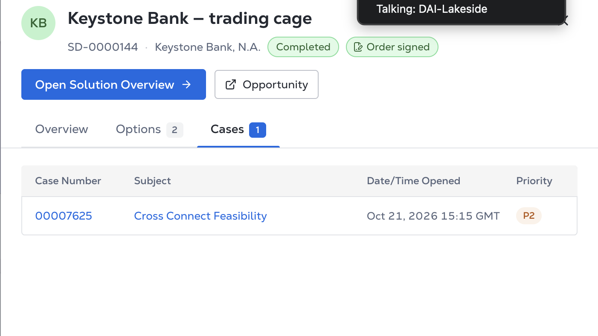
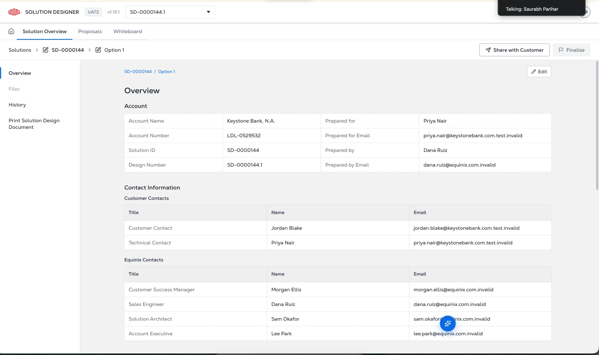
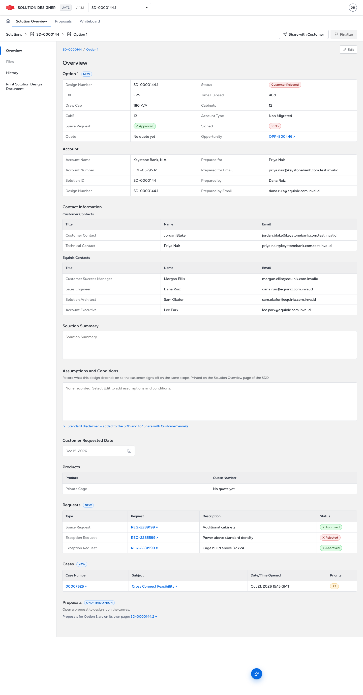
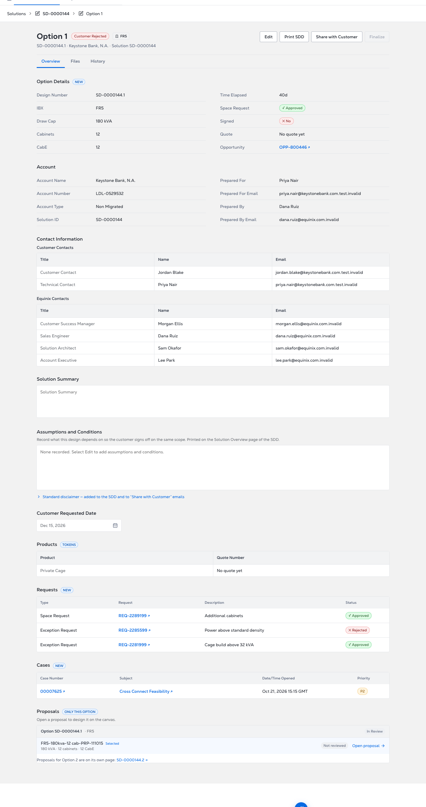
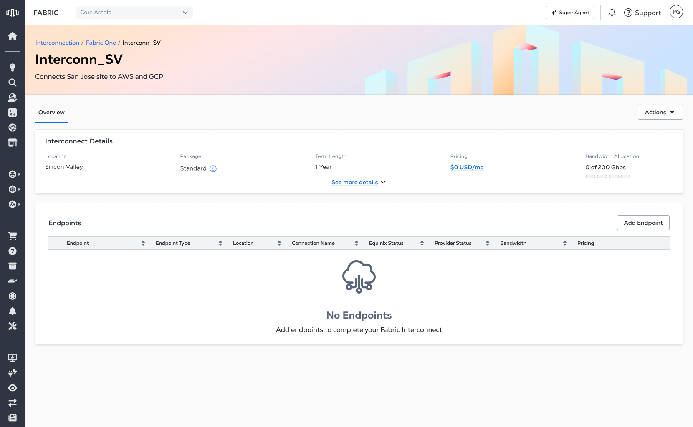
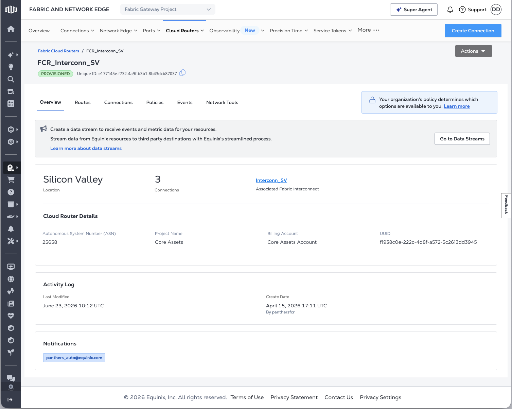
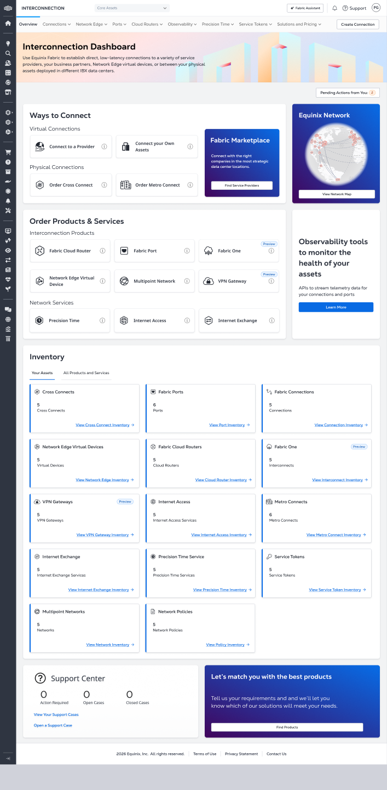
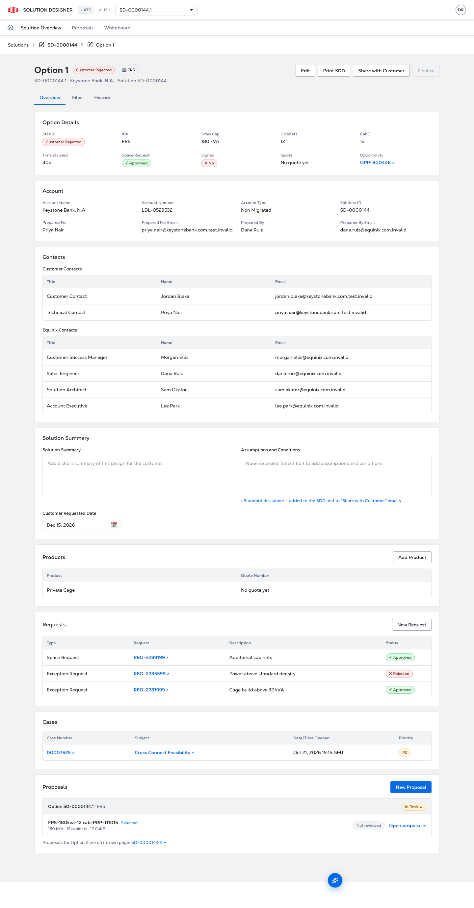
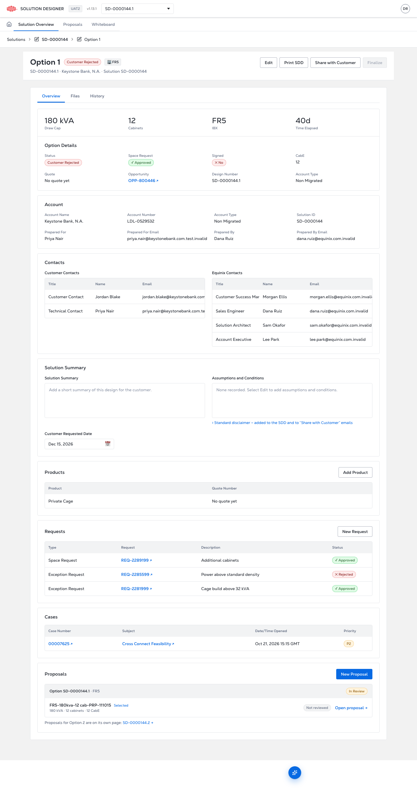
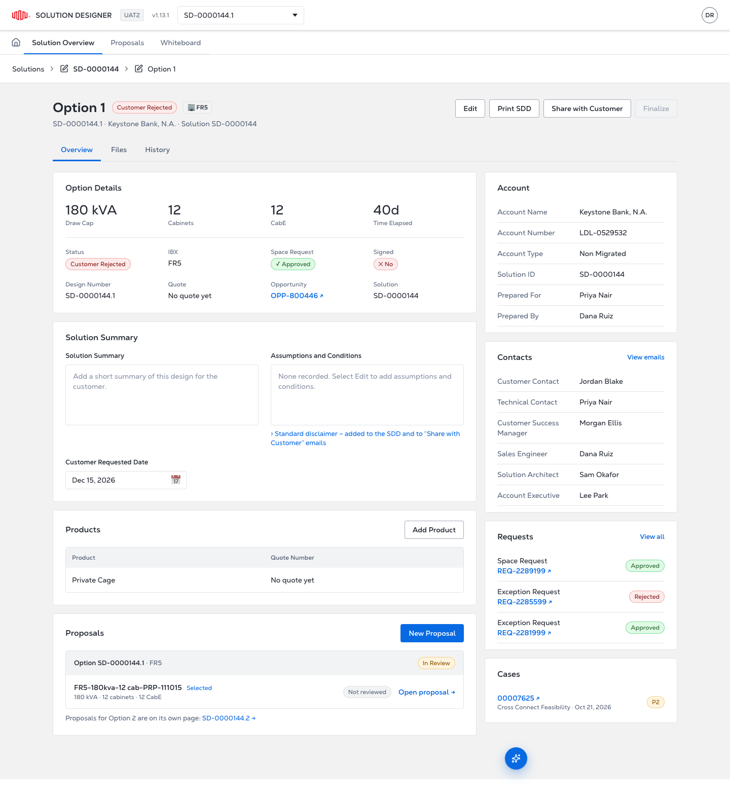

How the Solution Overview page for a design option should carry the information the hub drawer already shows, and how its layout should follow the ECP detail-page patterns. Four mock-ups, one review, decision pending.
Area Solution Overview page for a design option
Period November 18, 2026
Status Mock-ups proposed, decision pending
References Fabric One Figma (Oct 2026 page), hub details drawer
How to read this log
The Solution Overview page for a design option ("Solution Summary") was reviewed against the hub's details drawer and against ECP detail pages in the Fabric One Figma file. Each entry records the question, the evidence, the mock-ups rendered on the live prototype, and where the decision stands. Items marked Proposed are mock-ups awaiting a decision; nothing in this log has been built into the prototype yet.
1Drawer vs page: what the Option page is missingOpen question
Question raisedReview the side drawer information in each tab. Do we have missing information on the Solution Summary option page? If I click Option 1, it should have the information.
Evidence
The drawer has three tabs. The Option 1 page shows Account, Contacts, Solution Summary, Customer Requested Date, Products and a Proposals list.
Drawer, Options tab: per-option status, draw cap, cabinets, CabE, time elapsed, space request, signed, quote, requests and proposals.

Drawer, Cases tab: linked Salesforce cases in the ECP date format.

Solution Overview page for Option 1 as it is today.
Findings
Drawer tab
Field
On the Option 1 page
Overview
Account Type, Time Elapsed, Last Updated, Order Signed
Missing
Overview
Opportunity link, Cases and Requests summary, Approvals by option
Missing
Options
Option status badge, IBX as an attribute, Space Request, Signed
Missing or only as a note in the Proposals list
Options
Requests table with REQ links
Missing
Cases
Case number, subject, opened, priority
Missing
Data conflicts found
Account Executive is Jordan Hale in the drawer's Overview tab but Lee Park in Contacts and on the page.
Dana Ruiz is titled Solution Engineer in the drawer, Sales Engineer in Contacts and Prepared By.
Customer Requested Date is "—" in the drawer but "Dec 15, 2026" on the page, which falls back to a default date.
Proposal status: the hub says Accepted with option Customer Rejected; the page says In Review and Not reviewed. Two vocabularies for one record.
The Option 1 page lists proposals for both options.
Where it stands. The gaps and conflicts are confirmed. Fixing the four data conflicts needs one source of truth for the drawer and the page regardless of which layout is chosen below.
2Information additions on the current layoutProposed
Question raisedMock it first.
Mock-up

Current layout with an Option block at the top, Requests and Cases after Products, and Proposals limited to this option. Blue NEW tags mark additions.
Notes
Adds everything the drawer knows without changing the page structure.
The mock accidentally hid Option 1's own proposal card together with Option 2's; the build would keep it.
Where it stands. Superseded by the layout review in entry 3: the additions are needed, but the four-column boxed grids and the left rail do not match how ECP composes detail pages.
3Layout restructure to QUIX detail-page patternsProposed
Question raisedFor the layout, does this page match QUIX style? Anything we need to adjust, or your recommendation?
Assessment
The components were QUIX-like but the page was not composed like an ECP detail page: identity split across three bars, four-column grids with boxed cells, a documentation-style left rail, a duplicated breadcrumb, mixed label casing and hard-coded greys.
Mock-up

Page header with title, status badge, IBX chip and actions; tabs instead of the left rail; one breadcrumb; key-value lists for Option Details and Account; Title Case labels; token colours; plus Requests, Cases and option-scoped Proposals.
Trade-offs
Four actions in the header is the upper limit; Print SDD and Share could move to an action menu.
Tabs mean moving the Files and History routes out of the rail; straightforward in the prototype.
Where it stands. Recommended direction, then refined by entry 4 after the designer pointed out that ECP keeps all content inside white cards.
4Boxed content: three ECP card patternsProposed
Question raisedIn Fabric One the content is always inside the white box. Show me mock-ups with that, using the different use cases in the file.
Evidence from the Fabric One file

Interconnect detail: one white card per section under the tabs, each with its own action.

Cloud Router detail: header on white, one panel holding tabs and stacked inner cards, big-number summary first.

Interconnection dashboard: a grid of white cards with a narrower supporting column.
Options

Option A, one card per section: Option Details, Account, Contacts, Solution Summary, Products, Requests, Cases, Proposals, each with its own action. Closest to the Fabric One detail pages.

Option B, one panel with inner cards: header on a white band, big-number summary first, contacts side by side. The most dashboard-like, but cards inside a card is the heaviest of the three.

Option C, two-column card grid: the design in the main column, account context in a 380px side column. Fits one screen at 1440px; needs a responsive rule below about 1200px.
Where it stands. Assistant recommendation: A for the first build because it matches the Fabric One detail pages reviewers will compare against, with C as the strong alternative for scannability. Decision pending.
5Option C at full pageProposed
Question raisedShow me C as a full page so I can see all the information.
Option C was shown live and as a full-page render. Main column: Option Details with big numbers, Solution Summary, Products, Proposals. Side column: Account, Contacts with a View emails link, Requests with View all, Cases. All drawer information is present and the page fits a single 1440px screen.
Option C at full page, 1440px. Main column: Option Details with the four big numbers above status, IBX, space request, signed, design number, quote, opportunity and solution; Solution Summary with assumptions and the requested date; Products; Proposals for this option with a link to Option 2. Side column: Account, Contacts, Requests, Cases.
Where it stands. Awaiting the choice between A and C. Either build also fixes the data conflicts from entry 1 and keeps the header, tabs, single breadcrumb and Title Case labels from entry 3.
Next steps
Choose Option A or C and build it into the Solution Overview page.
Make the drawer and the page read the same fields: Account Executive, engineer title, requested date, proposal status.
Decide whether the Option page shows only its own proposals.